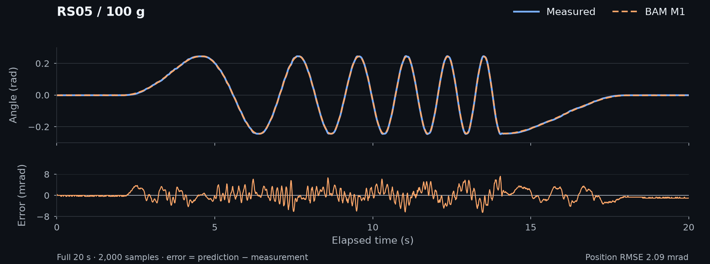

Install and run the offline example#
Start with three complete RS05 recordings and their frozen M1 model. This example verifies installation, reproduces the saved predictions, and writes comparison plots and metrics. No motor, CAN connection or GPU is needed.
Install#
Use Python 3.12 and uv. The source repository is private, so your GitHub account needs access and a working SSH key.
git clone --recurse-submodules git@github.com:motorfit/motorfit.git
cd motorfit
uv sync --frozen
For an existing checkout, initialize the pinned BAM dependency with
git submodule update --init --recursive before installing. Keep the committed
uv.lock; it records the tested core environment.
Reproduce the frozen model#
Choose a new output directory:
uv run --frozen motorfit demo \
--dataset examples/offline/manifest.json --output outputs/demo
The command verifies the model and dataset hashes, replays all three recordings
with BAM, and checks agreement with their saved reference trajectories. The output
contains comparison.png, metrics.csv, summary.json and three prediction
.npz files. summary.json records the hash checks and comparison results.
The example preserves one recording per load, the original split labels, the raw
and processed data, and the frozen model. The whole examples/offline/ directory
can be copied elsewhere. When running outside the repository, pass absolute paths
to the manifest and output directory.
Measured motion and model prediction#
This figure shows the complete 100 g frequency-sweep recording from the example’s gain-validation split, with its frozen BAM M1 prediction and position residual. It was selected to illustrate a frequency sweep; the demo evaluates all three recordings.


Try processing and fitting#
uv run --frozen motorfit process \
--raw examples/offline/raw --out outputs/processed --dt 0.01
uv run --frozen motorfit fit \
--logdir outputs/processed --model m1 --trials 20 --output outputs/demo-fit.json
This short fit demonstrates the API. It does not reproduce formal model selection or establish an independent test result. Keep the bundled frozen model unchanged; follow the identification guide for a new study with declared training, validation and final-test recordings.
Replay in MuJoCo#
uv sync --frozen --extra simulation
uv run --frozen --extra simulation motorfit replay \
--dataset examples/offline/manifest.json --engine mujoco \
--dt 0.002 --output outputs/mujoco
This uses the identification-equivalent pendulum fixture. See validation for the supported M1 controller and rig, and environments for Newton and mjlab.
Next steps#
Plan a complete experiment with separate training and evaluation data.
Read the RS05 study for the full experiment and its limitations.